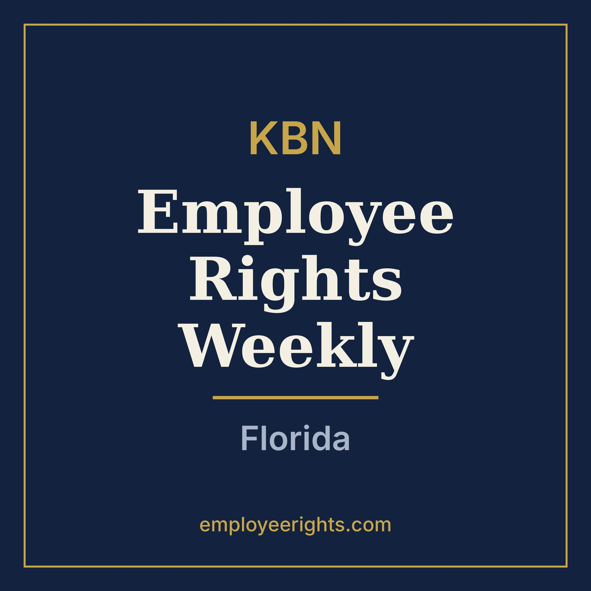

Employee Rights Weekly from Kwall Barack Nadeau (employeerights.com). Each Monday: new Eleventh Circuit and Florida appellate employment decisions, plus new EEOC, DOL and NLRB guidance. Created with AI. Not legal advice. Check every source before relying on it.
Apple Podcasts (iPhone or iPad): open Podcasts, tap Library, tap the ... button, choose Follow a Show by URL, and paste the feed address below.
Other podcast apps (Overcast, Pocket Casts and others): use the app's Add by URL option with the same address.
Feed address: https://law4employees.github.io/Podcast/feed.xml
From Kwall Barack Nadeau. Created with AI. Not legal advice.
Welcome to KBN Florida Employee Rights Weekly from Kwall Barack Nadeau. Every Monday: new Eleventh Circuit and Florida appellate employment decisions, plus new EEOC, DOL and NLRB guidance, with links to every source in the show notes. More at employeerights.com.
Created with AI. Not legal advice. Check every source before relying on it.
Middle District of Florida employment decisions newly available on Westlaw
Episode length: 8 minutes 14 seconds
Parke v. Delta Air Lines Inc.
Case No. 6:23-cv-2221-JSS-NWH, Orlando Division, Judge: JSS (docket initials), decided November 19, 2026
2026 WL 3561950
Florida Private Sector Whistleblower Act (FPSWA), plus negligent retention and defamation. Result: summary judgment for Delta; Parke's cross-motion denied; case closed.
A flight attendant fired in 2022 after a boarding dispute over masking claimed she was fired for objecting to Delta's COVID-19 rules for unvaccinated workers. Applying Gessner v. Southern Co., the court required proof of an actual violation of law by the employer, not just a reasonable belief. Her ADA medical-exam theory failed because the court relied on cases holding a COVID-19 infection is not an ADA disability. Her theory that a ramp agent and a manager interfered with crewmember duties failed because an individual employee's violation is not the employer's, and there was no evidence Delta ratified it.
Takeaway: An FPSWA claim needs an actual violation tied to the employer's own policy or practice, or proof the employer approved the conduct.
Westlaw (subscribers)
Louzada v. ME of Cape Coral North, LLC (Massage Envy)
Case No. 2:26-cv-1929-KCD-NPM, Fort Myers Division, Judge: KCD (docket initials), decided November 19, 2026
2026 WL 3561901
Title VII and FCRA sex discrimination, national origin discrimination, and retaliation (six counts). Result: motion to dismiss denied in full.
The only male therapist alleged fewer assignments, canceled appointments, missing tips, and repeated mocking of his accent, and he was fired three days after renewing a complaint. The court held a comparator is part of the McDonnell Douglas evidence framework, not a pleading requirement, and pretext arguments were premature. Repeated accent mocking was more than a stray remark, and he did not need to name each speaker. Informal complaints to supervisors are protected activity, and three days was close enough in time to plead causation.
Deadline: Defendant must answer within 14 days of the November 19, 2026 order.
Takeaway: A strong recent answer to motions that demand a comparator or proof of pretext at the pleading stage.
Westlaw (subscribers)
Deng v. Bladen Community College
Case No. 8:26-cv-02008-JLB-GDP, Tampa Division, Judge: JLB (docket initials), decided November 16, 2026
2026 WL 3513208
Title VII, FMLA, and breach of contract (pro se plaintiff). Result: motion granted in part; case transferred to the Eastern District of North Carolina, with no ruling on the dismissal arguments.
A math instructor at a North Carolina college sued in Tampa after he was fired, noting he was allowed to finish end of semester duties from Sarasota. The court held Title VII's own venue provision, 42 U.S.C. 2000e-5(f)(3), controls over the general venue statute. The decision makers and records were in North Carolina, and he would have kept working there. Where the plaintiff was when he got notice of the firing does not matter.
Deadline: Clerk directed to transfer the case and terminate all deadlines.
Takeaway: For remote or relocated workers, check Title VII's venue statute before filing in Florida.
Westlaw (subscribers)
Tortora v. Manny's Cucina Napoletana LLC
Case No. 6:25-cv-00877-JSS-LHP, Orlando Division, Magistrate Judge Leslie Hoffman Price, decided November 17, 2026
2026 WL 3539532
FLSA overtime and retaliation against a restaurant and two individuals. Result: motion for default judgment denied without prejudice.
All three defendants defaulted, but each count was pleaded against a single unnamed "Defendant" while the plaintiffs sought joint liability against all three, which the court flagged as a possible shotgun pleading. The motion also did not address individual or enterprise coverage. The court doubted that restaurant work and handling food that moved in commerce would establish coverage on their own.
Deadline: Within 21 days of the November 17, 2026 order, plaintiffs must file a standalone renewed motion for default judgment or a second amended complaint, or the court will recommend dismissal without prejudice.
Takeaway: Even on default, plead each count against each defendant and prove FLSA coverage with facts.
Westlaw (subscribers)
Edwards v. Elevance Health, Inc.
Case No. 6:26-cv-01925-CEM-LHP, Orlando Division, Magistrate Judge Leslie Hoffman Price, decided November 18, 2026
2026 WL 3547851
Title VII sex and race discrimination and retaliation, and Equal Pay Act (pro se plaintiff). Result: employer's motion to stay discovery denied.
The employer argued the Title VII claims were untimely and the Equal Pay Act claim was poorly pleaded. After a preliminary look, the court was not convinced the motion to dismiss would end the whole case, and the employer conceded it might only narrow it. General claims of cost and burden did not justify a stay.
Takeaway: A pending motion to dismiss rarely pauses discovery in this district unless it clearly disposes of the entire case.
Westlaw (subscribers)
Coverage is limited to decisions Westlaw has published; short procedural orders may not appear. Created with AI. Not legal advice. Check every source before relying on it.
Added to this feed on November 21, 2026, as a back episode. Coverage reflects what we could confirm from official and reputable sources.
Coverage: November 9 through November 15, 2026
Nothing new confirmed this week.
Nothing new confirmed this week.
Nothing new confirmed this week.
Nothing new confirmed this week.
Created with AI. Not legal advice. Check every source before relying on it.
Added to this feed on November 21, 2026, as a back episode. Coverage reflects what we could confirm from official and reputable sources.
Coverage: November 2 through November 8, 2026
Nothing new confirmed this week.
Nothing new confirmed this week.
Nothing new confirmed this week.
Created with AI. Not legal advice. Check every source before relying on it.
Added to this feed on November 21, 2026, as a back episode. Coverage reflects what we could confirm from official and reputable sources.
Coverage: October 26 through November 1, 2026
Nothing new confirmed this week.
Nothing new confirmed this week.
Nothing new confirmed this week.
Created with AI. Not legal advice. Check every source before relying on it.
Added to this feed on November 21, 2026, as a back episode. Coverage reflects what we could confirm from official and reputable sources.
Coverage: October 19 through October 25, 2026
Nothing new confirmed this week.
Created with AI. Not legal advice. Check every source before relying on it.